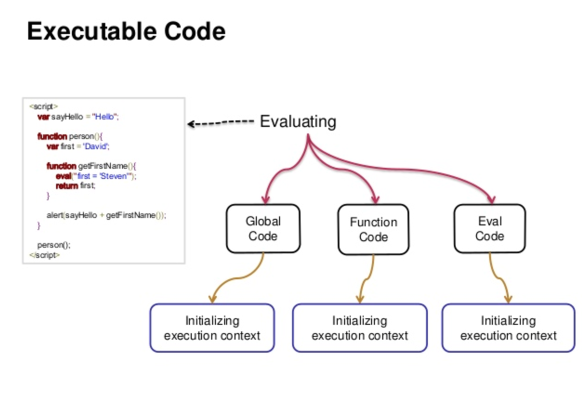
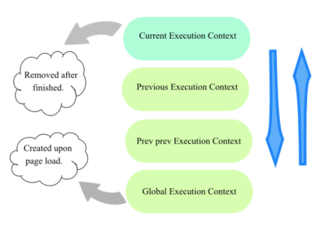
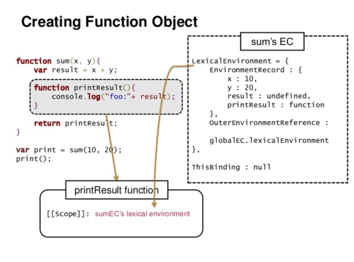
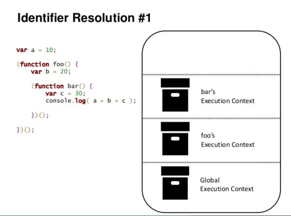
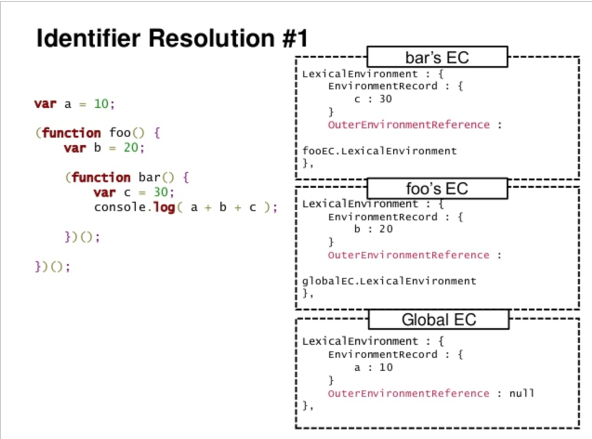

JavaScript
Agenda
- JavaScript 란
- ECMAScript
- Execution Context
- This
- Lexical Environment
- Variable 심화
- Function 심화
- ScopeChain 과 OuterEnvReference
- Prototype 위임 과정
- Q & A
- 사이트에 생명을 불어넣다
JavaScript 란
DOM과 브라우저를, 핸들링하기위한 스크립트 언어이다.
ECMAScript
(JavaScript)언어 기반을 구성하는 스크립트 언어이다.
Execution Context
코드가 실행되는 환경을 말한다.
실행 코드의 종류

전역 코드(Global Code)
프로그램 레벨에서 실행되는 코드이다.
함수 코드(Function Code)
함수호출 시, 실행되는 코드이다.
Eval 코드(Eval Code)
Eval 함수호출 시, 실행되는 코드이다.
ECStack
ECStack은 일종의 CallStack이다.
CallStack - 실행할 코드 정보를 저장하는 Stack이다.
ECStack은 LIFO 자료 구조를 갖는다.

Stack 의 바닥에는 항상 Global EC 가 존재하며, 가장 상위에는 현재 활성화된 EC 가 놓이게된다.
Pseudo Code
this
This 는 EC 속성중 하나이다.
Pseudo Code
This in the Global Code
전역 코드안의 This는 항상 전역 객체 자신이된다.
Source Code
Global Object
Built-in 객체 및 전역 코드의 모든 식별자 정보를 가진다.
Source Code
This in the Function Code
함수 코드안의 This는 함수 호출 방식에 의해 달라진다.
기본 바인딩
Source Code
NEW 바인딩
Source Code
암시적 바인딩
Source Code
명시적 바인딩
Source Code
new 연산자 매커니즘
Source Code
Lexical Environment

Pseudo Code
Components of Lexical Environment
Pseudo Code
LexicalEnv of Global Code
Source & Pseudo Code
LexicalEnv of Function Code
Source & Pseudo Code
Variable 심화
변수는 오직 VAR 키워드를 통해서만 선언된다.
Source Code
변수 초기화
Source Code
Function 심화
함수 선언식
함수 정의를 나타내는 문장으로 해석되며, 수행결과가 존재하지 않는다.
Source Code
함수 표현식
함수 표현식은 기본적으로 표현식 위치에만 정의할 수 있다.
Source Code
기명 함수 표현식의 함수 이름은 GlobalObject의 속성으로 추가되지 않는다.
Source Code
Scope Chain과 Outer Env Reference
함수 생성시점
[[SCOPE]]
함수 생성 시 [[Scope]] 속성이 생성된다.
[[Scope]] 속성은 직접적인 접근이 불가능하며, 초기화된 값은 변경되지 않는다.
[[Scope]] 속성은 상위 유효범위에 있는 LexicalEnv 를 참조한다.

Source & Pseudo Code
함수 호출시점


Source & Pseudo Code
Prototype 위임 과정
JavaScript는 프로토타입 기반 언어의 특징인 위임 과정을 따른다.
위임 과정이란 객체들간의 원형 복제 과정을 말한다.
위임된 객체 원형은 그 객체의 특징(속성, 메서드)들을 공유하기위해 사용된다.